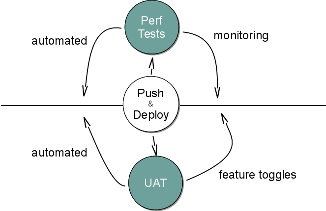
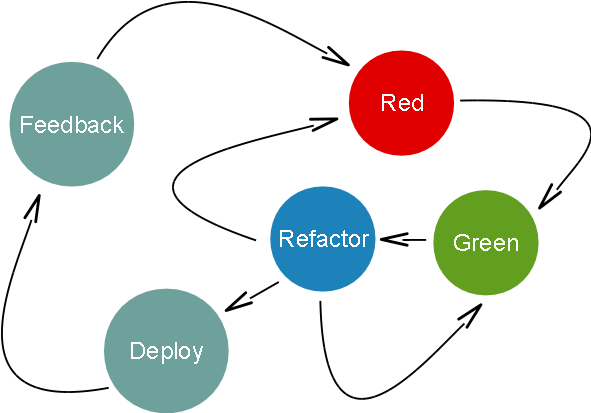
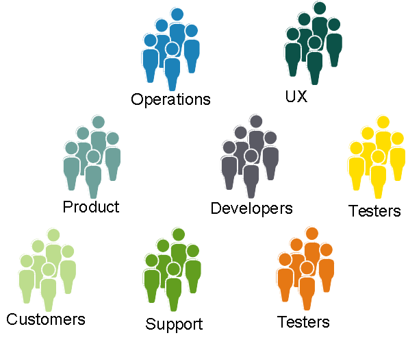

Big Ideas
Small Company
Moderate Heresy
Scaling Continuous Delivery at Unruly
Alex Wilson & Benji Weber | Pipeline 2014
@pr0bablyfine
@benjiweber
Unruly
http://www.unrulymedia.com/
Continuous Delivery and Us
- How we work
- Why it works
- Scaling Infrastructure
- Scaling Development
Careful & Considered
Approach
How we work…
eXtreme Programming
Feedback Loops
- Pairing
- TDD
- Customer
- Deploy
Iterations & Release Planning
"Plan releases once a quarter. Plan iterations more frequently"
(XP Explained)
We do none of these things
Goal
Deliver value as quickly as possible
Minimise time from conception to value
Value Stream

Accelerated Value Stream

Normal Value Stream

Definition of done
When tests pass
When integrated
When deployable build
When deployed
When measurably delivering value
Deploy Pipeline

Waterfall in a Tube
Gate Metaphor

Shorten Pipeline
Automate all the Things
- Acceptance
- Integration
- Component/Unit
- Performance
- …
Move Tests Post-Deploy
- Monitoring
- What & Why broken
- Fix rapidly
- NagDD
TDD-D
Synchronous
- Deploy & Feedback
- Inform next change
- Motivation to keep deploy fast
Consequence
No CI Server
Promotion
Business Dev decides when to deploy
- Feature Toggles
UAT in Production
- Global Org
- Production-like
- Performance feedback early
Accessible Customer
Essential
Continuous Delivery Deployment
Every build is capable of being deployed
Every push is deployed
Even after beer o'clock
Branching
- No long lived feature branches
- No pushed branches
- Real CI
- Integrate with users and data
Roll Back Forward
People & Culture
Siloing Is Bad
Split by Product
Generalists over Specialists
Specialists help generalists do better
Product Team
Didn't work - became a bottleneck
Collective Ownership
- Code
- Tests
- Requirements
- Ops
- Support
Devs On Call
Freedom and Responsibility

Pair Programming
Real-time code review
Cross-pollination
Internal tech-talks
Team rotation
Team lead rotation
Self-improvement
- Retrospectives
- 20% Time
- Dev Tasks
Questions so far?
Infrastructure Challenges
1-100 Servers
Infrastructure As Code
- TDD
- Pairing
- Tight feedback loop
Making snowflakes disposable
More frequent machine death during growth
Continuous Disposal
Caught out by assuming servers were rebuildable - they weren't
First Day
Any project's first step - deploy "Hello World"
TDD (sort of)
Unit-testing less useful
Acceptance testing much more informative
Acceptance Testing
@test "apache should redirect to https" {
run curl http://analytics.unrulymedia.com/
[ "$status" -eq 0 ]
echo "$output" | grep -q '< Location: https://analytics.unrulymedia.com/'
}
Module Testing
@RunWith(ServerSpec.class)
public class AnalyticsWeb {{
describe(service("httpd"), it -> {
it.should(be.enabled);
it.should(be.running);
});
describe(port(80), it -> {
it.should(be.listening);
});
describe(port(443), it -> {
it.should(be.listening);
});
}}
Gating Infra
Instances declared as test - ignored by monitors/measures
Same people, different pipeline
Cross-team/Shared Infrastructure
Everyone assumed everyone else cared; everyone suffered
Teams needed to collaborate on cross-team infra issues
Reduce Variance, Increase Mean
Homogenous systems are easier to reason about.
MTBF becomes less important than MTTR
Cronned code deletion
Dev Scaling Challenges
Existing project boundaries
Conway's Law
"organizations which design systems ... are constrained to produce designs which are copies of the communication structures of these organizations"
Take advantage
API Tradeoff
Split as you need to
You know least when you start
Monolith vs MicroServices
Deploy speed vs Dependency Hell
State
Continuous Investment
Deploy Speed & Reliability
@QuarantineRule
0.1% failure rate is annoying with 100 tests
0.1% failure rate is impossible with 10,000 tests
Collective Ownership
vs
Freedom
Key
Points
Short pipeline
Fast feedback
Early value
Thanks for Listening
Any Questions?
Heckle us on Twitter – @pr0bablyfine @benjiweber
We're hiring – talent@unrulymedia.com